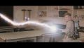
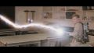

RetroShift Digital
Back when I attended UNL, some close friends and I started RetroShift Digital, our own little independent film and media company. I am the resident sound and music guy for the company. For our productions, I have done foley work, voice acting, sound synthesis, music supervision and composition, and some boom mic work when we needed it. Our primary team is only 4 people, so we all wear a lot of hats. In addition to sound work, I have acted in front of the camera, assisted in writing and worldbuilding, and operated on-set lighting
Something Strange: A Ghostbusters Fan Film
Something Strange is our love letter to the Ghostbusters franchise, and our first real production during our freshman year. We crowdfunded a little over $1000 to get it off the ground. Our director, Nathan Smiley, wrote the screenplay, supplied all the camera and lighting equipment, did all the visual effects and cinematography, and built & modified all the props. Our stop motion expert, Mac O'Brien, modeled and hand animated the ghost for the movie. Our lead actor, Drew Carlson, paid out of pocket for his flight suit and STILL let us slime him for the movie. He and I also worked together on most of the sound aspects in post production. In addition to post produciton sound, I did lighting, an arrangement of Elmer Bernstein's "Ghostbusters Theme", and lent my voice to the ghost. We debuted Something Strange at UNL's Golden Cans film festival and took home the people's choice and best actor awards, beating out several senior capstone projects. It has also racked up nearly 20 thousand views on YouTube.


 

{kind=link}